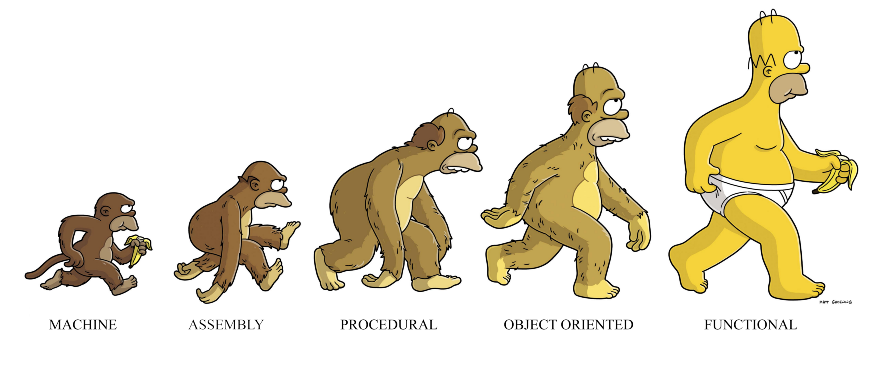
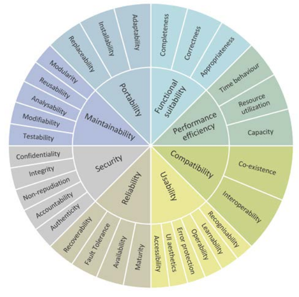
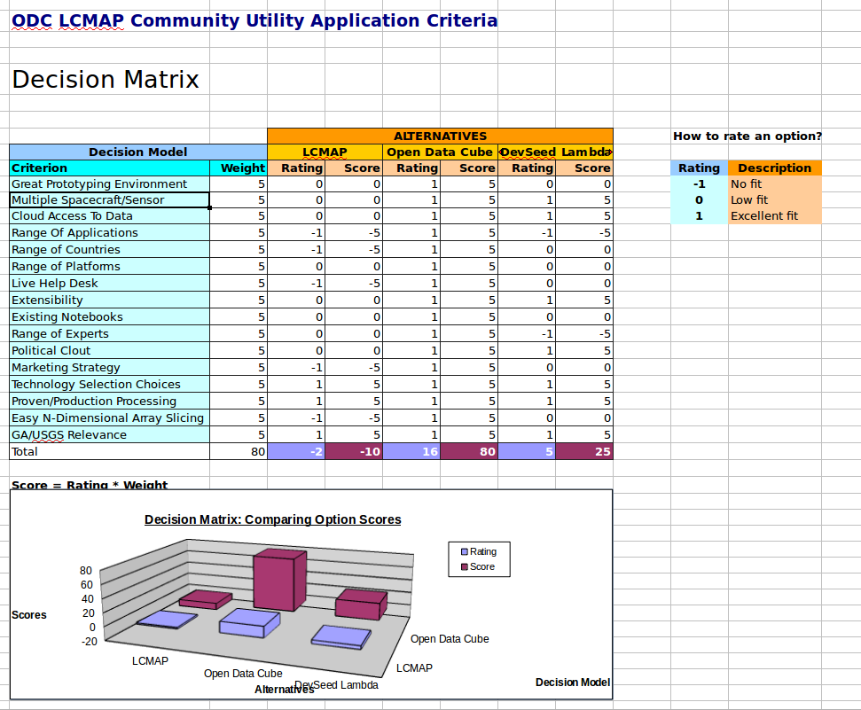
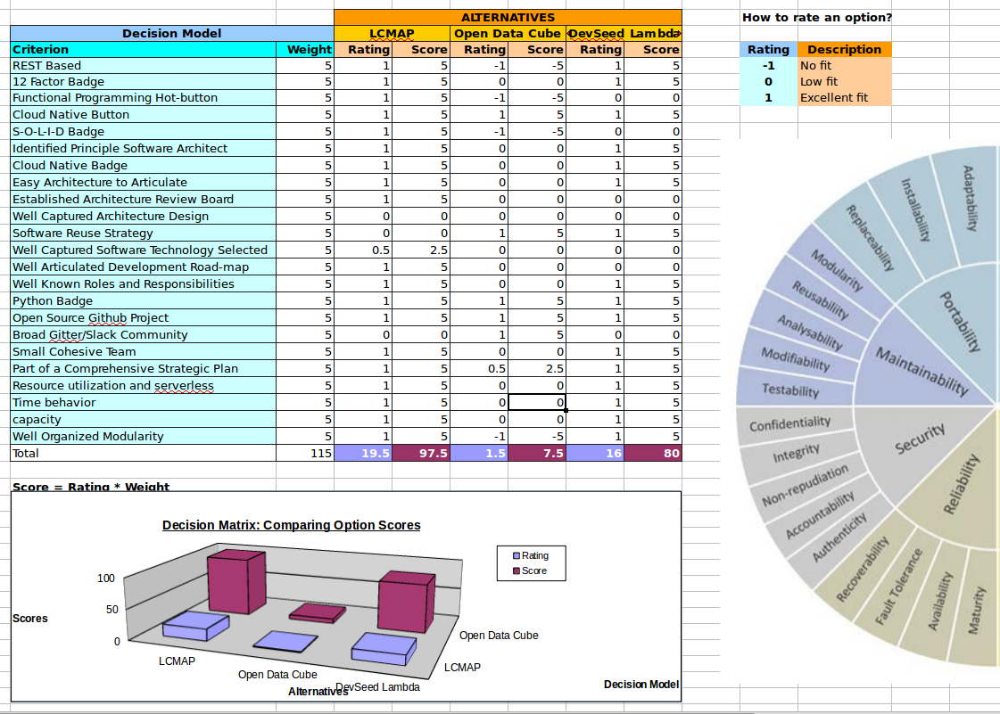
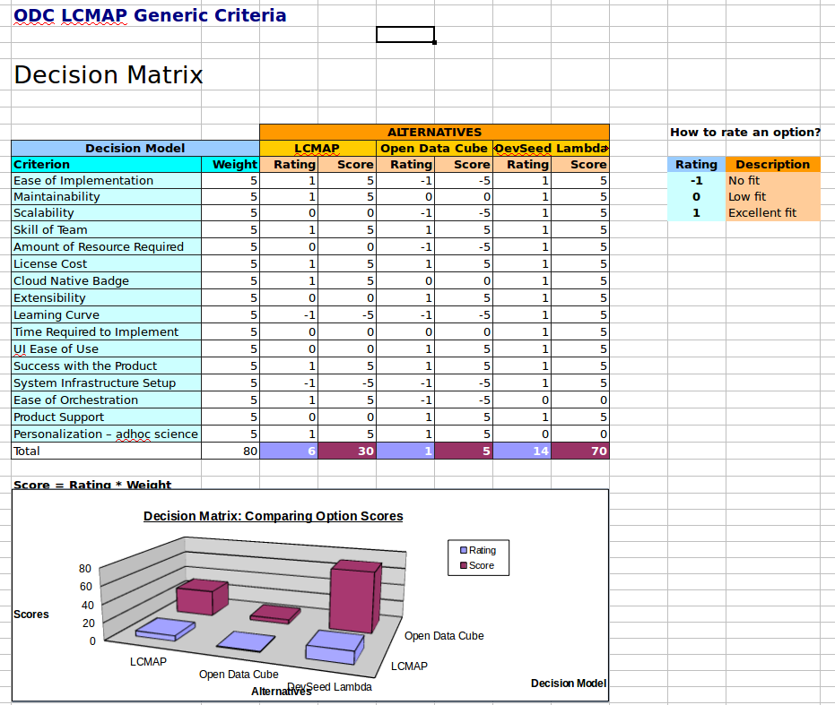

ODC/LCMAP Findings 2018¶
Document Overview¶
This document is organized as follows:
Executive Summary
The Notional Ideal Code Library
ODC Project and Code Evaluation
LCMAP Project and Code Evaluation
LSAA Synergies
DevelopmentSeed “Raft” Prototype
COGs
Metadata - cloud storage and exploitation strategies (databases vs. ElasticSearch)
General Project Evaluation Criteria
Executive Summary¶
After carefully looking at all aspects of the Open Data Cube project and the LCMAP project I have identified some themes for using these complementary components in ways that emphasize there respective strengths. These findings can be summarized as follows:
Use ODC as a prototyping environment and testbed/sandbox environment for exploring science algorithms of several flavors. CCDC represents just one of many application workflows that can be demonstrated and tuned using the ODC platform.
Use ODC to coordinate internal projects at USGS/EROS by exploring common goals by visual demonstrations of the evolving Landsat Products and metadata. Further by testing/examining cloud stored data and metadata ODC tests will help in validating cloud placement/organization and system data storage strategies for Collection 2.
Continue to refine the LCMAP code base with an eye toward cloud deployments, look for ways to minimize the list of services that must persist, since the cloud is a metered set of services, anything left running in non-elastic, persistent ways will incur usage charges from the cloud provider. Consider using S3 storage as a cheap replacement for IW+DS, the dramatic slowdown in speed might be compensated for by using low-cost elastic compute capabilities within the AWS suite of solutions. Stay focused on the well-articulated system engineering road-maps leveraging on-premise equipment today with simple porting strategies to the cloud when called for.
Find ways to evaluate code libraries that are used in EROS science application stacks. This paper documents some criteria for code selection and illustrates how various projects can be examined through the lens these criteria reflect.
Grow the emerging relationship between major projects at EROS including the burgeoning synergies between ODC and LSAA.
Embrace the browser as the user interface enabler either directly via React JS or indirectly through open standards such as OGC WMS. Invest in pilot programs/prototypes connecting ODC and LCMAP data warehouse with these connectors.
The Notional Ideal Code Library¶
This section discusses some evaluation criteria for examining code modules as candidates for inclusion into the LCMAP code enclave/base. In reviewing the applicability of the Open Data Cube “Core” library/package many of these criteria were used to determine the the ODC library should sit astride of LCMAP and not as a fundamental inclusion/dependency in the LCMAP software stack. in the face of commodity compute and near commodity storage, it is important to note that the code base will stand out like Devil’s Tower as the biggest investment for tools and libraries for the USGS and therefor its important to critically evaluate what libraries are layered into our software products by evaluating these packages with a scrutinizing eye.
The notional ideal code package should have many of the following attributes:
Easy to install
Easy to understand
Easy to modify or extend
Well documented or self explanatory
Clean Code LINK HERE
A simple documented architecture - the source tree matches the graphics
A code advocate, policy enforcer, software architect, visionary
Clear reason for being
Modular; no big balls of mud here
Code is well organized
Execution flow is obvious and can be understood before runtime
Each method has one simple function akin to Functional Programming
Testable
Bug Free or bugs as endangered species
Contained in a thin Docker Container
The ability to orchestrate/deploy in the following scalable ways
AWS Lambda
Docker Swarm
Kubernetes
Mesos
DASK
Coded in a programming language that is:
Flexible
Well Loved
Self Documenting
Supports multiple paradigms
Minimizes bugs
What Else?¶
In addtion to the notional ideal code base we would look for these further quality aspects inside a project:
The Notional Ideal Development Team
The Notional Ideal Development Process
The Notional Ideal Project Leadership
The Notional Ideal Infrastructure Environment
The Notional Ideal Strategic Vision
The Notional Ideal Team Culture
The Perfect Communication Atmosphere
ODC Code and Project Evaluation¶
ODC Strengths¶
The xarray portable data cube construct
Supports many EO satellites, not just Landsat
Greatly simplifies the creation of spontaneous, customized, user-defined EO data cubes
supports my favorite projection
my area of interest filtered from the mass of data
my temporal depth from single scenes to full time-series
scientific computations work on my entire cube
I don’t need to buy a bunch of local disk
supports a myriad of map-reduce data problems
Rapid full country adoptions of the technology - 20 by 2020
Most recent is MEXICO supported by INEGI - Instituto Nacional de Estadistica y Goegrafia
ODC Weaknesses as an LCMAP Component¶
ODC is quite large and is monolithic. This by itself is not inherently bad, However; in the context of using all or parts of ODC in the cloud the size and structure of ODC will make it less suitable then smaller component based libraries.
ODC’s pace of innovation will not likely keep up with EROS’s insatiable technology needs.
ODC’s mission and priorities are not LCMAP specific.
ODC has limited interest in pyccd collaboration.
ODC is hard to install and scale.
ODC is still forming its team and is working on the fundamentals
Assigning a principle architect
Understanding the architecture and related strategic direction
Working out the bugs discovered as they port the code to the cloud
ODC is still defining software and system engineering roles or at least they are not well understood by the community
ODC carries and depends on a big database [Postgresql]
Databases cost too much to persist in the cloud
Object storage traversal with metadata organized via STAC will prevail
Databases require DBAs and bog you down with whole bunch of complexity and maintenance headaches
Actually this is why we are looking at ODC in the first place - to replace the Cassandra database
Replacing one database with an inferior approach - makes no sense
LCMAP requires an Information Warehouse and Data Store
ODC [with effort] can extract pixels and metadata - BUT it has no clean mechanism for storing results, intermediate models and raster products.
ODC has a volunteer culture that makes deliverable accountability and predictive scheduling more difficult
ODC serves many masters - this can challenge the notion of a shared vision
Many Platforms - still a large priority on on-prem instances
Country Outreach initiatives
Consensus convergence takes longer with the current ODC Governance Structure
“”” Pointer to strategic direction paper “”” Sanjay’s Strategic Communication Directive Paper
“We should be mindful of what is desired/ideal vs. what is practical (given limited time and resources).”
ODC has been evaluated by several skilled technical experts [Davis, Hill, Morton, McGreggor, Butzer] as a support library for LCMAP and the consistent opinion is that ODC serves a different, more general set of use cases and a better, leaner approach is to use the underlying libraries (Rasterio, GDAL, numpy, etc) directly from the LCMAP application layer. “The ruling on the field stands”
LCMAP Code and Project Evaluation¶
Reseach Question Re-iterated¶
Should USGS EROS use the Open Data Cube [framework, library, preparation scripts, and persistent postgresql database] as a cloud based infrastructure replacing (or doing the same job as) the on-premise infrastructure consisting of a Science Execution Engine and Information Warehouse and Data Store?
I have done heavy research to answer the question and my answer is that LCMAP should:
Use the prototyping aspects of ODC to empirically prove the viability of LCMAP components and algorithms in the cloud.
and then Optimize the cloud architectures and work flows either in concert with the ODC development team or out front of the ODC team.
Either way the sharing relationship between Geoscience Australia and USGS/EROS and the benefits derived from the ODC intiative (science, community and code) will continue to help the quality of the Landsat Data products as placed in cloud storage and the variety, voracity and velocity of scientific discovery using remote sensing data.
I view the Open Data Cube - sort of like the keel boat in the “Corp of Discovery” and it will help map the way to the cloud for LCMAP, but not be a long term tightly integrated component of the global scale raster product creating LCMAP processing flows in the cloud or on premise.
LCMAP Strengths¶
90% cloud ready today (as is/out-of-the-box) without huge code modifications necessary
Forward looking tools, languages and techniques practiced and improved from day one
Robust practices
well documented code
lean code
well documented project plans
well documented data products
well documented data formats
Accountability to leadership and scientists
Modularity
Platform Independence
Tightly Integrated Team with a cohesive vision
Code is easy to install and unit test - from github to operational in a single day
LCMAP uses functional programming in clojure and python
Fantastic Systems Engineering Lead and Team
evolution
On-premise to Cloud Migration Approaches¶
Cloud Native - building cloud ready applications on purpose¶
Because the experienced staff from the LCMAP project has written their libraries with these principles in the forefront their code is cloud ready by intentional design.
Cloud Native: Cloud native is a term used to describe container-based environments. Cloud-native technologies are used to develop applications built with services packaged in containers, deployed as microservices and managed on elastic infrastructure through agile DevOps processes and continuous delivery workflows.
Packaged as lightweight containers
Developed with best-of-breed languages and frameworks:
Designed as loosely coupled microservices:
Centered around APIs for interaction and collaboration (REST and HTTP)
Architected with a clean separation of stateless and stateful services
Isolated from server and operating system dependencies
Deployed on self-service, elastic, cloud or cloud-like (Mesos) infrastructure
Managed through agile DevOps processes (CI/CD)
Automated capabilities (infrastructure as code)
Defined, policy-driver resource allocation (discrete resource allocation (CPU, MEM, DISK) thinking - not full VM thinking)
Technology Lifecycle¶
Some folks are concerened with project life-cycles or software life-cycles. While I have a periphery concern in these arenas, as a “technologist” I concentrate on the technolgy lifecycle and categorize technical element in the following categories
Promising Technologies - These are items on the horizon that while not proven, hold the possibility of improving the efficiency of the organization and warrant some prototyping work to further evaluate.
Strategic Technologies - These selected technologies are the best of breed and are aggressively being implemented and
Operational Technologies - These items are necessary to keep the wheels truning but will be phased out in the comming years. They do still require sustaining operations support that should not be under estimated.
Landfill Technologies - These are what I categorize as hurry up and push out of the infrastructure enclave. These are costing way more in real and opportunity costs and therefore represent a need to be trashed.
Promising¶
ElasticSearch
STAC
Strategic¶
S3 – This is a given for numerous reasons - easily documented - perhaps this is a small paper
COGs – COGS COGS or near COGS have been well documented and you can locate the references - perhaps just a pointer
Xarray – A number of applications and visualizations are being developed that take an xarray as the input abstraction.
rio/gdal – These python libraries allow for image read and write to geotiffs in the cloud (also on local disk - but local disk is not in scope)
Operational¶
postgresql
Landfill¶
TBD - some items will be replaced by more modern and easier approaches
Technical Debt¶
Technical debt (also known as design debt or code debt) is a concept in software development that reflects:
the implied cost of additional rework caused by choosing an easy solution now
instead of using a better approach that would take longer.
Causes of code debt¶
Insufficient up-front definition,
Business pressures,
Lack of process or understanding,
Tightly-coupled components, where functions are not modular, the software is not flexible enough to adapt to changes,
Lack of a test suite,
Lack of documentation,
Lack of collaboration,
Parallel development,
Delayed refactoring,
Lack of alignment to standards,
Lack of knowledge,
Lack of ownership,
Poor technological leadership,
Last minute specification changes,
Big Ball of Mud¶
A big ball of mud is a software system that lacks a perceivable architecture. Although undesirable from a software engineering point of view, such systems are common in practice due to business pressures, developer turnover and code entropy.
Programmers in control of a big ball of mud project are strongly encouraged to study it and to understand what it accomplishes, and to use this as a loose basis for a formal set of requirements for a well-designed system that could replace it.
“The only way to write complex software that won’t fall on its face is to hold its global complexity down—to build it out of simple parts connected by well-defined interfaces—so that most problems are local and you can have some hope of upgrading a part without breaking the whole.” – Eric Raymond – The Art of Unix Programming
Evaluation Criteria¶
This section describes the tiers of criteria used in making objective and subjective decisions concerning ODC as a library, ODC as a component of the LCMAP technical stack, and ODC as a collaboration in the larger context of distributing Landsat imagery to the science community.
General Criteria¶
The graphic below depicts a good summary for evaluating any technology element.
general eval criteria
The VALUE of Open Data Cube Community¶
I don’t think EROS can overstate how useful the ODC Community is toward supplying a better product. This community is akin to having a super focus group with the collective skill sets to understand all of the nuanced aspects of the Landsat product pipeline from raw data to Analysis Ready Data and now Analysis Ready Metadata.
The decision matrix below is meant to summarize the value from collaborating with this “Open” community and the reach beyond the core ODC team into the large Earth Observing specialists from companies like Planet, Radiant Earth, Development Seed, Synergise, Catapult etc.
Further the utility of the Xarray delivered by Open Data Cube can not be overstated and will yield easy to build time-series analysis tools.
ODC Community criteria
LCMAP is well designed and well built¶
The LCMAP architecture, code and processes continue to yield solid solutions with the requisite modular structure and accompanying documentation to run in a multiple of environments including cloud infrastructures. The graphic below is a tribute to this code base as an engine for continuous change detection and likely general application support in the future.
LCMAP uses a solid Architecture
Development Seed and the STAC/COG Approach¶
The next graphic illustrates some of the strengths of a cloud SERVERLESS approach that leverages existing smaller libraries and emerging image and metadata storage standards for rapid, real-time data viewing and soon execution-engine image processing on the fly. Agile, open approaches are likely to race out front of other legacy approaches as the momentum of AWS accelerates the infrastructure and disrupts traditional job descriptions, the current STAC code hackathon sprints illustrate how quickly applications can spring up and out do there recent predecessors.
LCMAP uses a solid Architecture
Older Answers - to be sorted¶
“You can’t wait for inspiration, you have to go after it with a club.” – Jack London
Q: Should LCMAP use all, some or part or none of the Open Data Cube as part of its plan for deployment to the cloud? Preface
Before answering this question below its important to point out the value of the Open Data Cube community and continued collaborations with GeoScience Australia and that the sharing of applications, technologies, source code, infrastructure and data as a result of this continued collaboration is not predicated on the wholesale use of ODC as a production underpinning for LCMAP. Further, the open environment provided by GA in the AWS space is somewhat of a contrast to the more buttoned-down mandated cloud capabilities in the centrally administered Cloud Hosting Service. Recommendations and Suggestions
Keep collaborating on Open Data Cube, remain on the steering council, remain plugged into the source tree, keep a pulse on the documented and changing architecture, work toward extracting code and concepts into more modular, "Cloud Native" packaging, and dump the database.
Begin porting parts of LCMAP, starting with basic IW+DS access Jupyter Notebooks, tapTool and other test driven development code use cases and use the infrastructure and orchestration techniques developed under the first year ODC efforts to accelerate the schedule for LCMAP to the cloud.
Continue automating all aspects of the testbed/sandbox in the cloud for the benifit of LCMAP and really any cloud projects. This work includes Infrastructure as Code, data extraction, data network transfers, and data reformatting to COGs.
Zen and the Art of Motorcycle Maintenance “Quality – you know what it is, yet you don’t know what it is. But that’s self- contradictory. But some things are better than others, that is, they have more quality. But when you try to say what the quality is, apart from the things that have it, it all goes poof! There’s nothing to talk about. But if you can’t say what Quality is, how do you know what it is, or how do you know that it even exists? If no one knows what it is, then for all practical purposes it doesn’t exist at all. But for all practical purposes it really does exist. What else are the grades based on? Why else would people pay fortunes for some things and throw others in the trash pile? Obviously some things are better than others – but what’s the ``betterness’’? – So round and round you go, spinning mental wheels and nowhere finding anyplace to get traction. What the hell is Quality? What is it?” - R. Pirsig “Zen and the Art of Motorcycle Maintenance”